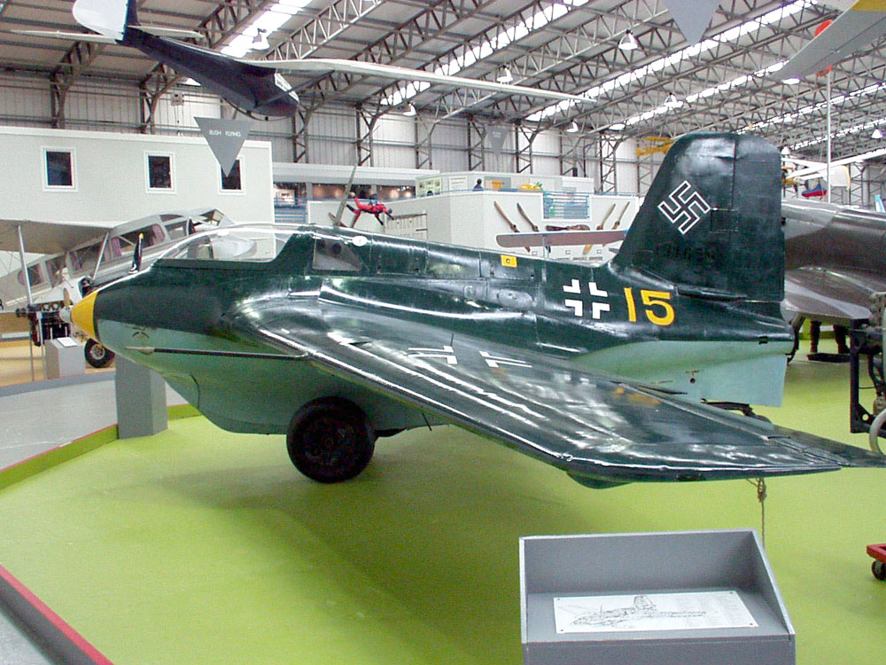
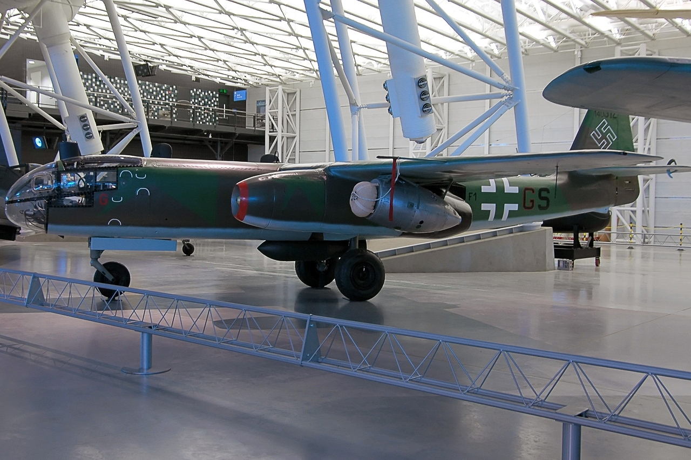
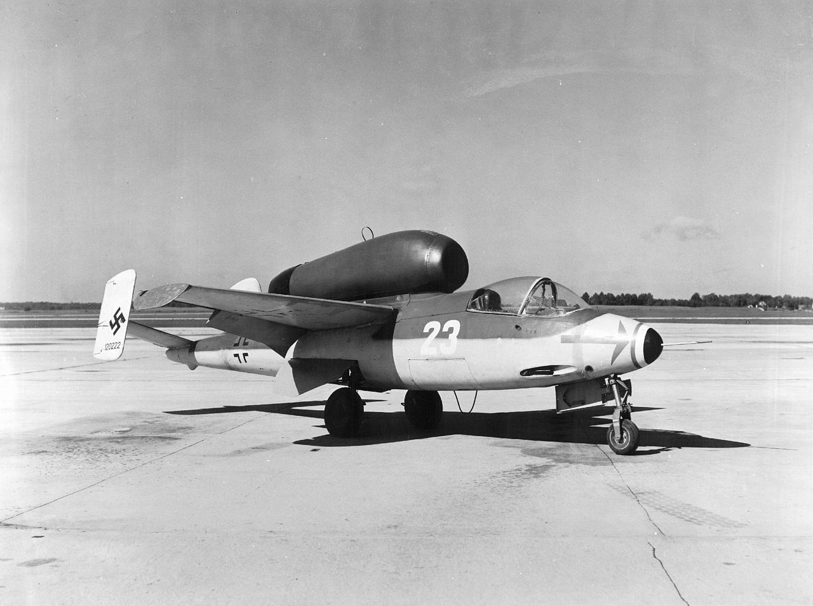

Messerschmitt Me 163 Komet niemiecki myśliwiec przechwytujący o napędzie rakietowym z okresu II wojny światowej.
Uzbrojony w 2 działka MK 108 kal. 30 mm oraz 12 pocisków rakietowych R4M kal 50 mm,
produkowany był w latach 1944-1945 w tym okresie wyprodukowano ok.400 egzemplarzy.

Arado Ar 234 niemiecki samolot bombowo-rozpoznawczy o napędzie odrzutowym z czasów II wojny światowej.
Uzbrojony w 2× działko MG 151/20 kalibru 20mm opcjonalnie w 2x bomby 500kg lub 1x bomba 1000kg 1x bomba 1400kg,
produkowany był w latach 1944-1945.

Heinkel He 162 Volksjäger, znany też jako Salamander niemiecki myśliwiec odrzutowy z okresu II wojny światowej.
Uzbrojony w 2x działka 20mm MG 151,
produkowany był w latach 1944-1945 w tym okresie wyprodukowano ok.320 egzemplarzy.

Messerschmitt Me 262 Schwalbe pierwszy użyty bojowo niemiecki samolot myśliwski o napędzie odrzutowym z okresu II wojny światowej.
Uzbrojony w 4x działka MK 108 kalibru 30mm, 24 pociski rakietowe R4M kalibru 55mm oraz 2 bomby po 250 kg,
produkowany był w latach 1944-1945 w tym okresie wyprodukowano 1433 egzemplarzy.